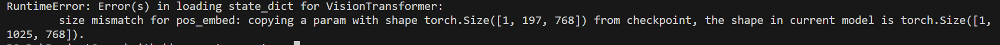
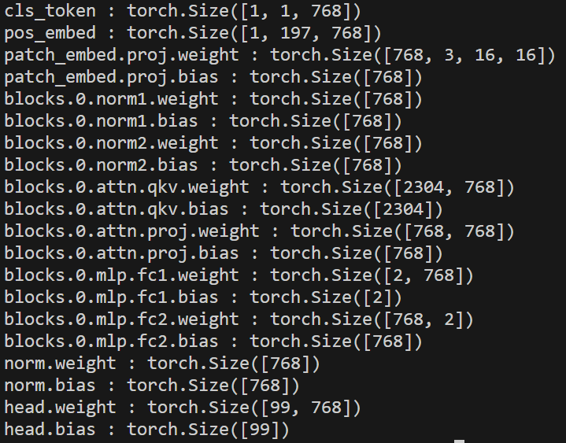
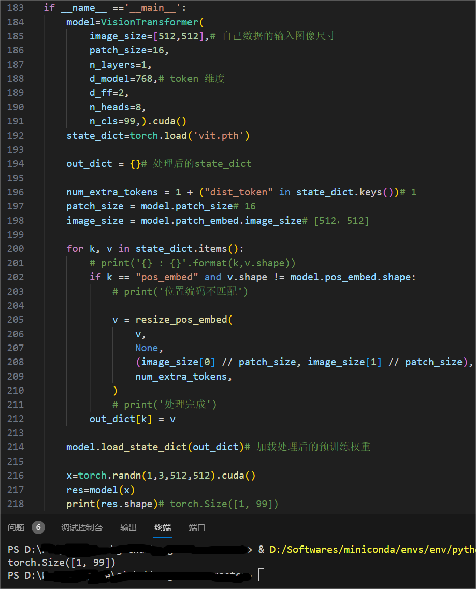

在将基于transformer的视觉模型(比如 ViT, Swin Transformer等)迁移到自己的数据集上进行微调时，往往需要使得自己的数据集中图像尺寸和这些模型的输入图像尺寸一致，这些模型常见的输入尺寸为224x224,284x284,768x768等。
然而，如果自己的数据集中图像尺寸比较大，比如1024x1024，直接resize为224x224等低分辨率图像会造成信息损失。
能不能在迁移预训练权重的同时，使得模型能够适应任意尺寸的输入呢？可以。
接下来以ViT为例，首先通过实验探究一下出现这种限制的原因，然后给出解决方案。
ViT模型定义如下:
1
2
3
4
5
6
7
8
| model=VisionTransformer(
image_size=[224,224],
patch_size=16,
n_layers=1,
d_model=768,
d_ff=2,
n_heads=8,
n_cls=99,).cuda()
|
假设这个ViT已经在大规模数据集上完成了训练，并且训练时的输入图像尺寸为224x224，将其权重进行保存:
1
| torch.save(model.state_dict(),'vit.pth')
|
现在需要将其迁移到自己的数据集上做微调，自己的图像尺寸是512x512的，因此需要在定义ViT模型时，将image_size参数从[224,224]改成[512,512]:
1
2
3
4
5
6
7
8
| model=VisionTransformer(
image_size=[512,512],
patch_size=16,
n_layers=1,
d_model=768,
d_ff=2,
n_heads=8,
n_cls=99,).cuda()
|
定义好模型后，直接加载预训练权重会报错:
1
2
| state_dict=torch.load('./vit.pth')
model.load_state_dict(state_dict)
|

根据报错信息可以得知，是当前模型和预训练模型的位置编码(pos_embed)维度无法匹配。
这正是无法直接使用预训练权重在任意尺寸输入图像上进行微调的原因。
上述定义的两个模型的唯一区别在于输入图像尺寸image_size不一致，对于224x224的输入图像，按照patch_size=16进行切分，总共可以得到(224//16)*(224//16)=14*14=196个patch，而对于512x512的输入图像，相应的总共(512//16)*(512//16)=32*32=1024个patch。
（报错信息中显示的是197和1025，多出的1维是cls token）
而位置编码的shape(一般是[序列长度,token 维度])的第0维和切分后的patch数必须一致才能够做如下的加法融合：
输入图像尺寸的变化只影响位置编码的维度，可以通过查看保存权重中的全部参数来印证这一点：
1
2
| for k, v in state_dict.items():
print('{} : {}'.format(k,v.shape))
|

768是token的维度，2304=768*3，99是分类数，这些参数在上述两个模型中都没有改变，唯一出现问题的地方就是第二行：
1
| pos_embed : torch.Size([1, 197, 768])
|
因为在训练自己的数据集时，pos_embed参数的维度变成了(1,1025,768)，无法匹配预训练权重中的(1,197,768)。
定位到原因就容易解决了，直接将预训练权重中的位置编码参数pos_embed由(1,197,768)插值到(1,1025,768)就可以了，代码实现如下：
1
2
3
4
5
6
7
8
9
10
11
12
13
14
15
16
17
18
19
20
21
22
23
24
25
26
27
28
29
30
| model=VisionTransformer(
image_size=[512,512],
patch_size=16,
n_layers=1,
d_model=768,
d_ff=2,
n_heads=8,
n_cls=99,).cuda()
state_dict=torch.load('./vit.pth')
out_dict = {}
num_extra_tokens = 1 + ("dist_token" in state_dict.keys())
patch_size = model.patch_size
image_size = model.patch_embed.image_size
for k, v in state_dict.items():
if k == "pos_embed" and v.shape != model.pos_embed.shape:
print('位置编码不匹配')
v = resize_pos_embed(
v,
None,
(image_size[0] // patch_size, image_size[1] // patch_size),
num_extra_tokens,
)
print('处理完成')
out_dict[k] = v
model.load_state_dict(out_dict)
|
其中的resize_pos_embed函数定义如下：
1
2
3
4
5
6
7
8
9
10
11
12
13
14
15
16
17
18
19
20
21
22
23
| def resize_pos_embed(posemb, grid_old_shape, grid_new_shape, num_extra_tokens):
'''
posemb: 1x197x768
grid_old_shape: (image_size[0] // patch_size, image_size[1]) // patch_size = (14,14)
grid_new_shape: (H // patch_size, W // patch_size) = (512//16,512//16) = (32,32)
num_extra_tokens: 1
'''
posemb_tok, posemb_grid = (
posemb[:, :num_extra_tokens],
posemb[0, num_extra_tokens:],
)
if grid_old_shape is None:
gs_old_h = int(math.sqrt(len(posemb_grid)))
gs_old_w = gs_old_h
else:
gs_old_h, gs_old_w = grid_old_shape
gs_h, gs_w = grid_new_shape
posemb_grid = posemb_grid.reshape(1, gs_old_h, gs_old_w, -1).permute(0, 3, 1, 2)
posemb_grid = F.interpolate(posemb_grid, size=(gs_h, gs_w), mode="bilinear")
posemb_grid = posemb_grid.permute(0, 2, 3, 1).reshape(1, gs_h * gs_w, -1)
posemb = torch.cat([posemb_tok, posemb_grid], dim=1)
return posemb
|
测试一下，无bug，通过：
